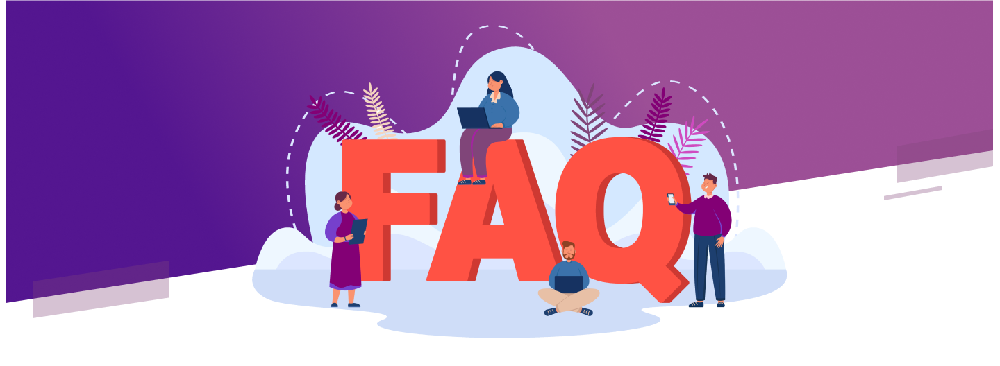

What is Zepiex?
ZEPIEX is a comprehensive security service management software that offers fast, efficient, and
all-in-one solutions. With its intuitive interface, ZEPIEX empowers security companies with
real-time security data to effectively manage their guards and ensure top-notch security
operations. This mobile web-based application aims to enhance team communication, provide
instant incident reports, and greatly improve the performance of your security guards.
If I decide to cancel my subscription, what is the process? Is there a contractual agreement
in place?
At ZEPIEX, we prioritize relationships built on mutual trust and respect. That's why we
refrain from imposing contracts and provide the freedom to cancel subscriptions anytime. Our
monthly-based billing allows clients to terminate their subscription if they are not satisfied
with the results.
What is the duration of the free trial?
Zepiex offers a 14-day free trial period for Novagems, followed by the option to purchase a
monthly full-service subscription. During the trial, you can assess the software's efficiency
and experience its immediate advantages.
Is free technical support provided to teams, including guards?
Zepiex's Commitment to Round-the-Clock Support:
1. Availability Around the Clock: We are dedicated to being there for you whenever you need
assistance.
2. 24/7 Customer Support: Our customer support service operates continuously to address your
concerns.
3. Multiple Contact Options: Connect with us via live chat or email at info@zepiex.com for
technical support or any queries.
4. Responsive and Reliable: Count on us to provide prompt and dependable assistance, ensuring
your
needs are met.
Are discounts available?
At ZEPIEX, we provide volume discounts and special offers for annual payments. To inquire about
discounts available for your volume orders or annual payment, please reach out to us via email
at info@zepiex.com. Alternatively, you can engage in a live chat with our team using the ZEPIEX
platform/website.
Is it possible to modify the reports prior to sending them to the client?
The generated reports from our software are fully customizable, allowing you to make desired
edits before sharing them with your clients.
Do the guard devices require an internet connection while using the service?
For optimal results, it is advisable to ensure that the guard devices remain connected to the
internet when using the Zepiex service.
Is the software compatible with both smartphones and laptops?
ZEPIEX software is fully compatible with both smartphones and laptops, allowing you to access it
seamlessly on various operating systems